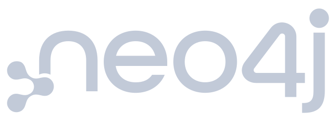
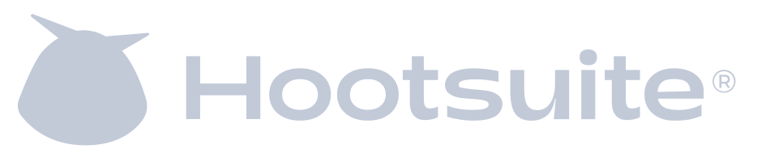

compile-time annotation processor for the JVM
AI guardrails,
compiled from your code.
CLAUDE.md, .cursorrules and their cousins are hand-edited,
drift per developer, and go stale the moment the code moves. VibeTags generates them
from annotations in your Java or Kotlin source. Annotate once, and every AI tool's
guardrail file is regenerated on the next compile.
- MIT licensed
- Zero runtime overhead
- Maven & Gradle
- Java 21+
@AILocked(reason = "Breaks the payment gateway")
public interface PaymentProcessor {
String processPayment(double amount);
}✓ CLAUDE.md<locked_files> entry written between VIBETAGS markers
✓ .cursorrulesDO-NOT-EDIT rule for PaymentProcessor regenerated
○ 35 more toolseach opted-in file updated on the same compile
the problem
Your AI config files are already stale
Hand-edited, per developer
Each teammate curates their own .cursorrules and CLAUDE.md.
The rules that protect production code exist only on the machines of the people who
already know not to touch it.
Divorced from the code
Rename a class and every guardrail that mentioned it now points at nothing. No compiler checks a markdown file. Nothing fails. The rule just stops existing.
One file per tool, times N tools
Claude, Cursor, Copilot, Gemini, Windsurf, a PR reviewer and a context packer: the same intent, copy-pasted into a dozen formats, each drifting separately.
VibeTags moves the source of truth into the source: guardrails are derived from annotations, regenerated on every compile, and reviewed like any other code change.
how it works
Annotate, opt in, compile
Annotate
Mark intent where it lives: @AILocked on the payment gateway,
@AIPrivacy on PII, @AIContext for focus and pitfalls,
@AITestDriven for enforce-the-tests. 44 annotations, all
SOURCE retention.
Opt in by touching a file
File presence is the opt-in: VibeTags only regenerates files that already exist,
and never creates one on its own. touch CLAUDE.md .cursorrules, or let
vibetags init do it.
Compile
Every opted-in file is rewritten between VIBETAGS-START/END markers.
Hand-written content around the markers is never touched. Commit the result;
the whole team and every tool see the same rules.
features
Built for real codebases
Scoped rules keep always-on context slim
Opt into a tool's rules directory (.claude/rules/,
.cursor/rules/, …) and the aggregate file collapses to an index:
safety-critical rules stay inline, per-element detail loads only when the matching
file is opened. The VibeTags repo dogfoods this. Its own CLAUDE.md
block is 45 lines.
Drift fails the build
Check mode (-Avibetags.check=true) verifies every generated file
against the annotations and fails the compile when anything drifted; nothing is
written. The bundled GitHub Action fails any PR whose diff touches
@AILocked code.
Reactors merge safely
Maven and Gradle multi-module builds merge per-module guardrails through sidecars: modules compile independently, the root files stay consistent, and a cold clone can't sweep another module's committed rules.
Kotlin via kapt
The annotations are plain Java annotations with SOURCE retention,
so they work on Kotlin classes and functions under kapt unchanged, asserted by a
dedicated consumer build in CI.
Companion CLI
vibetags init bootstraps the opt-in files;
vibetags doctor reports wiring, active platforms and marker integrity
with a CI-friendly exit code. The platform list is read from the processor, so the
CLI can't drift from it.
Numbers a test enforces
44 annotations, 37 platforms, 49 files: pinned by
ProjectFactsConsistencyTest. 1,546 tests, OpenSSF Best Practices
100%, fuzzing, mutation testing, three JDKs and three OSes in CI.
platforms
One compile, every tool aligned
Aggregate files, scoped-rule directories, ignore files and machine-readable reports for the tools your team actually mixes.
- Claude Code
- Cursor
- GitHub Copilot
- Gemini CLI
- Codex CLI
- Windsurf
- Zed
- Cody
- Aider
- Cline
- Roo Code
- Trae
- Qwen Code
- JetBrains Junie
- Amazon Q
- Continue
- Tabnine
- Firebase Studio
- CodeRabbit
- PR-Agent
- Ellipsis
- Sweep
- llms.txt
- Repomix
- gitingest
- …and more
The full table, with every generated file, is in the repository README.
adoption
Teams evaluating VibeTags




Identified from package-registry download telemetry. Logos are the trademarks of their respective owners; their appearance here indicates observed downloads, not endorsement or a commercial relationship.
quick start
Add it in 60 seconds
<dependency>
<groupId>se.deversity.vibetags</groupId>
<artifactId>vibetags-annotations</artifactId>
<!-- Always picks the absolute highest version available -->
<version>[0,)</version>
</dependency>
<!-- processor on the annotation-processor path -->
<annotationProcessorPaths>
<path>
<groupId>se.deversity.vibetags</groupId>
<artifactId>vibetags-processor</artifactId>
<!-- Always picks the absolute highest version available -->
<version>[0,)</version>
</path>
</annotationProcessorPaths>dependencies {
// Always picks the absolute highest version available
compileOnly 'se.deversity.vibetags:vibetags-annotations:latest.release'
annotationProcessor 'se.deversity.vibetags:vibetags-processor:latest.release'
}# pick your tools (or: jbang se.deversity.vibetags:vibetags-cli:1.0.4 init --list)
touch CLAUDE.md .cursorrules
mvn compile # or: gradle buildThe BOM, Kotlin/kapt setup, granular rules and check mode are in the usage guide.
faq
Questions
Does it add anything to my runtime?
No. Every annotation is RetentionPolicy.SOURCE: erased at compile
time, nothing in the class files, nothing on the runtime classpath. The processor
runs inside javac and only on your build machines.
What happens to the parts of CLAUDE.md I wrote by hand?
They survive. Generated content lives strictly between
VIBETAGS-START/VIBETAGS-END markers; everything outside is
yours and is never touched. Whole-file formats (JSON/TOML configs) are documented
as such.
Will it start writing files I didn't ask for?
No. File presence is the opt-in: the processor only regenerates files that already exist, and deleting a file deactivates that platform. The one documented exception: activating Codex also writes its sidecar config.
Kotlin? KSP?
Kotlin works under kapt (a CI-built example consumer proves it). KSP is not supported; it does not run JSR 269 processors. Class- and function-level annotations work fully under kapt.
Multi-module builds?
Fully supported for Maven and Gradle reactors: per-module sidecars merge into the root files, modules can opt into their own scoped output, and a lean indexed root keeps the always-loaded context small. See the multi-module guide in the repository.
License?
MIT, free for any use, commercial included. If it saves you time, the repo has a donation link.
Stop repeating yourself to every AI tool
Two dependencies, one touch, one compile. MIT licensed and on Maven Central.